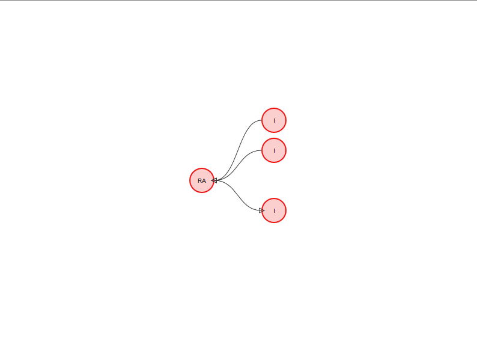
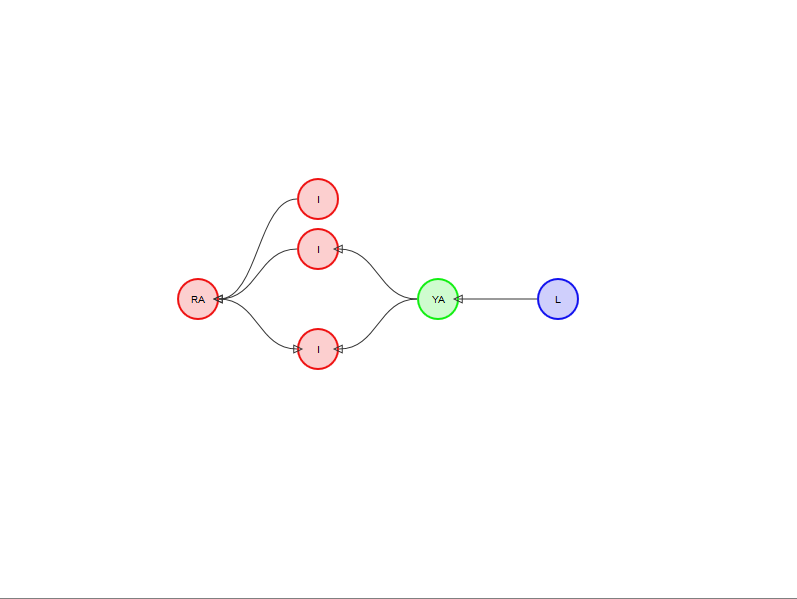
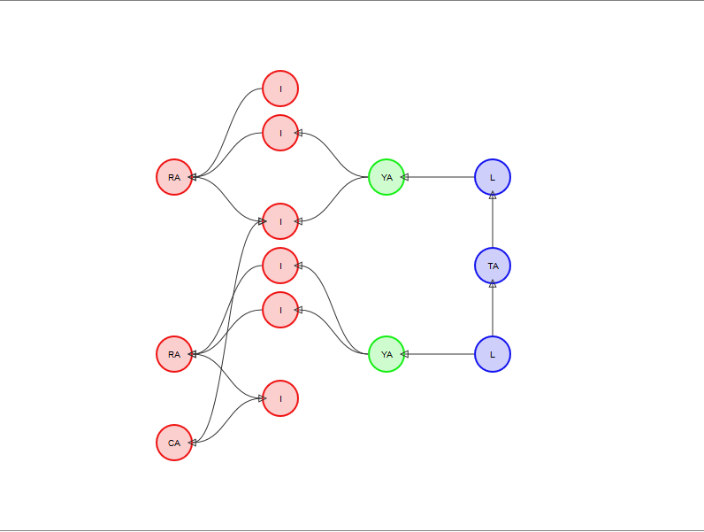
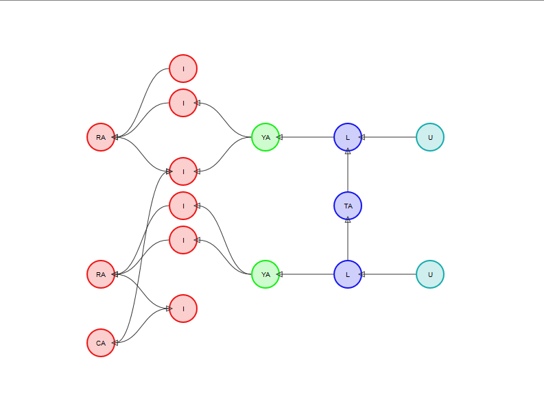
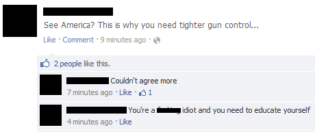
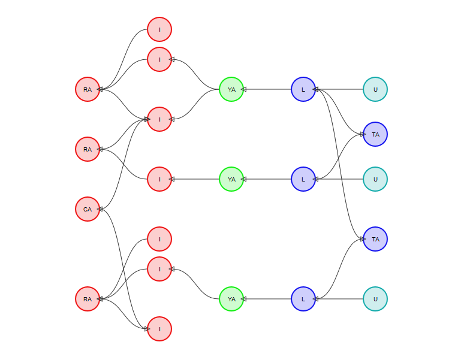
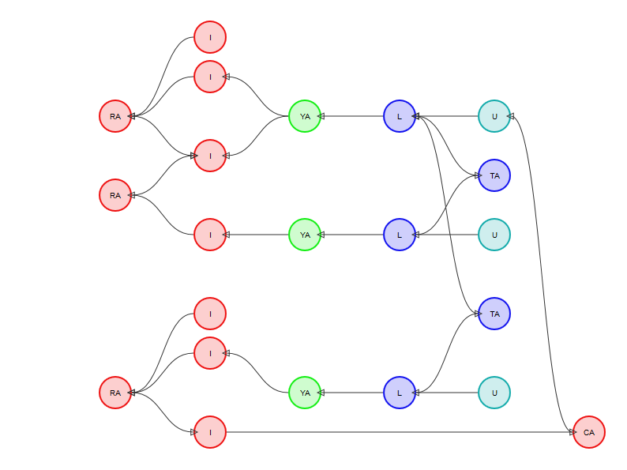
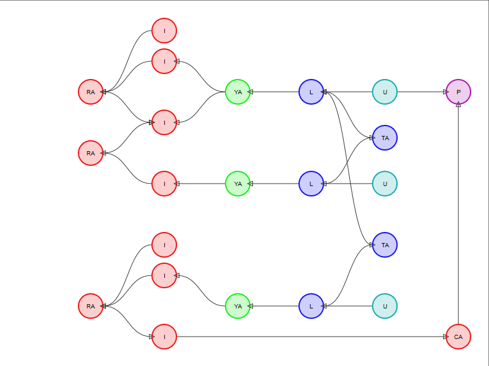
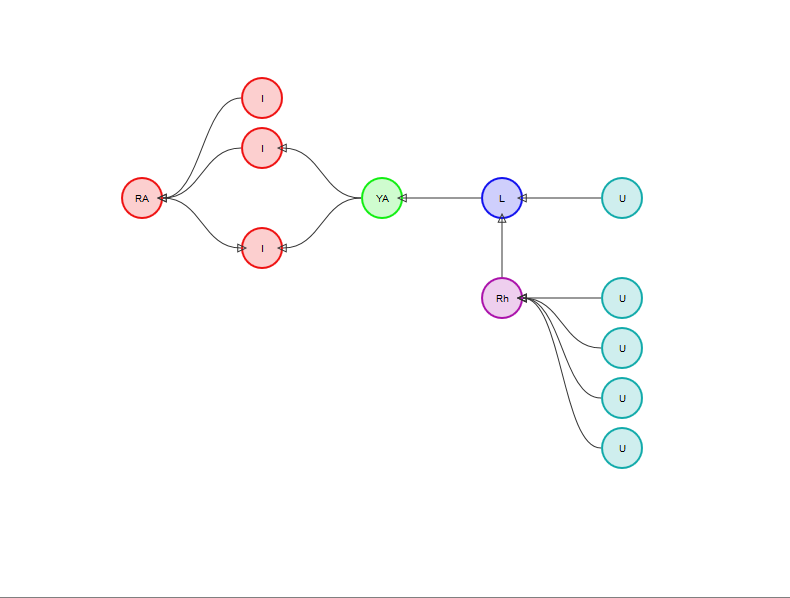
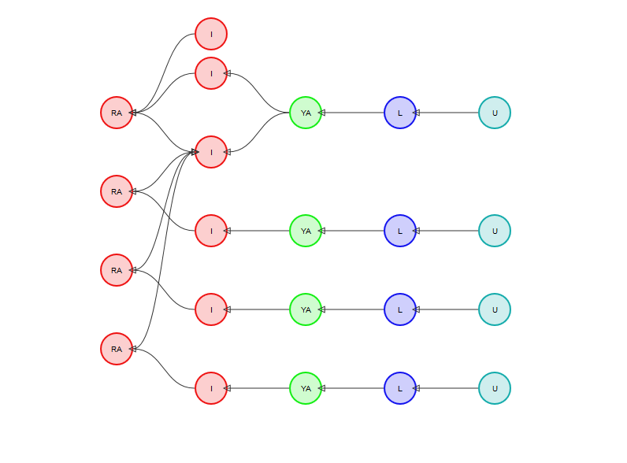

Argumentation on the Social Web
Modelling dialectic and eristic argumentation
Tom Blount, David Millard and Mark Weal
Web and Internet Science, University of Southampton
Slides available at: http://tomblount.co.uk/argumentation-social-web

Introduction
- Social media is a rich opportunity for large scale analysis of argument
- Social argumentation differs from formal argumentation
- How can we capture these different forms of argumentation?
Social Argumentation: What?
- Dialectic vs. eristic
- "Meta-Rhetoric"
- Unusual features (image macros, etc.)
Social Argumentation: Why?
- Trolling/abuse
- Group-think/echo-chambers
- Creating and maintaining vibrant online communities
Social Argumentation: How?
- What structures do social arguments form?
- How can we model these structures?
AIF
Argument Interchange Format
AIF+
AIF+
A more complex example
SIOC
Semantically-Interlinked Online Communities
Ad Hominem
- "To the man"
- Attack an opponents argument by undermining their credibility
Example:
Can be modelled as:
Or:
Or even:
Social Features
- Upvotes/Downvotes
- Favourites
- Reposts/reblogs
Example:
Compare this...
Example:
...with this
Could map to...
Modelling total up/down votes with a "Rhetoric" Node
...or...
Modelling each up/down vote as a Locution
Conclusion
- Social media is an excellent opportunity to analyse argumentation on a large scale
- Argumentation is a social activity
- Modelling this dimension of argumentation will allow us to make full use of the social web